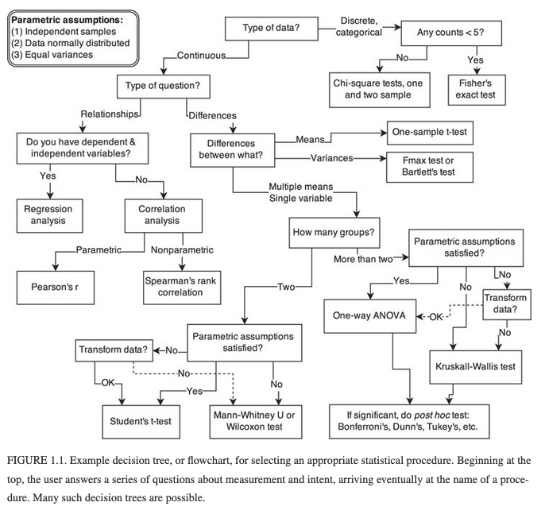
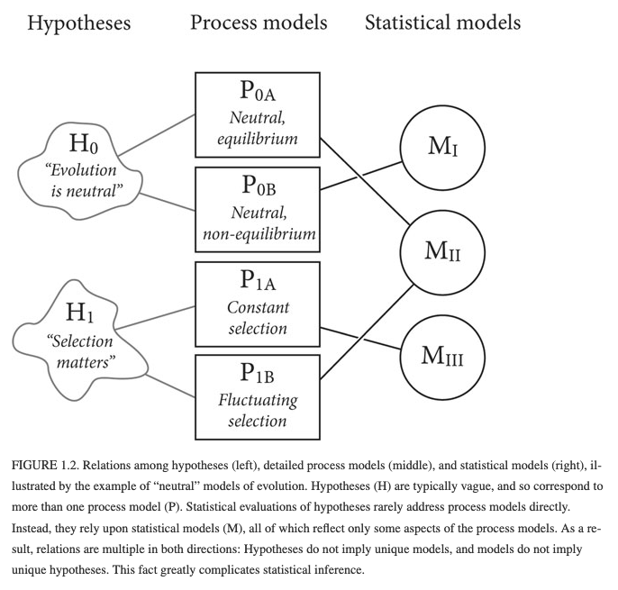

I've taken statistics courses in undergrad, grad as well as medical school. The undergrad experience was the typical cookbook approach to into stats without unifying coherent themes based on abstract mathematical rigor. My grad experience was focused on pure mathematical abstractions without any practical or motivating applications. Medical school stats relied more on memorization to enable the class to minimally interpret and design medical studies without assuming any math or statistics.

In retrospect, none of these statistics classes proved nearly as useful as fundamental math, physics and engineering courses at competitive undergrad and grad programs. Contrary to common perceptions, beyond narrow route applications the practice of statistics becomes a craft with more human judgement and interpretation with more sophisticated
informed by various applications and interaction with diverse domain experts. College
Statistics has been more like programming and foreign languages in that I've encountered many people who become proficient at both through practice rather than training.
In retrospect, I only began to understand statistics after university when I was immersed in work projects or ancillary to other goals like acquiring a more sophisticated understanding of statistical machine learning/AI. The college experience is too brief, fragmentary and artificial to develop a deep understanding and mastery of complex topics. The most valuable preparation I had for learning statistics was studying math, physics and engineering at Berkeley and UT Austin.

Richard McElreath's Statistical Rethinking Winter 2019 (github repo in Stan/R and PyMC3/Python)
With the rise of cheaper compute, big data and better ML/AI algorithms medicine is becoming more quantitative and statistical like the rest of society. There was very little role for quantitative approaches in ortunately more medical schools are requiring more math and stats these days which is essential with the rise of quantitative medicine, personalized genomics, outcomes based healthcare etc which are driven by big data and statistical machine learning/AI).